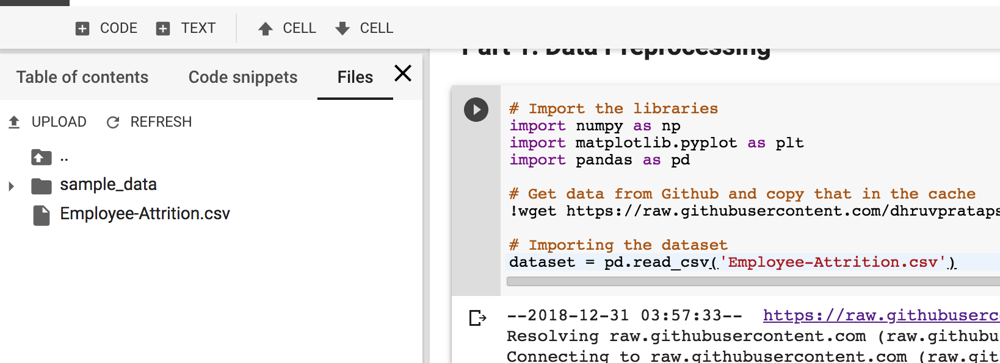
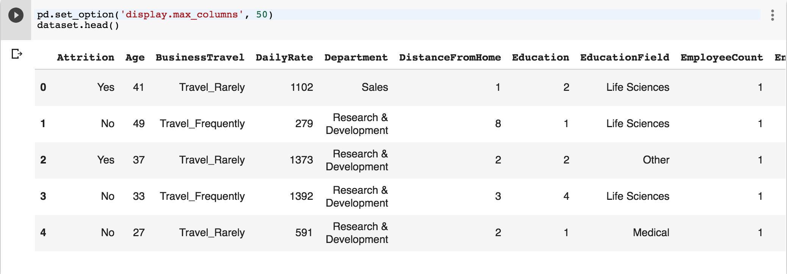

We will predict Employee Attrition using Artificial Neural Networks.
Table of Contents
- Data Preprocessing
- Create ANN
- Make predictions
- Evaluate - Improve - Tune ANN
Part 1: Data Preprocessing
# Import the libraries
import numpy as np
import matplotlib.pyplot as plt
import pandas as pd
# Get data from Github and copy that in the cache
!wget https://raw.githubusercontent.com/dhruvpratapsingh/Deep-Learning/master/SupervisedDL/ANN/employee_attrition/Employee-Attrition.csv ./
If you click on “Files” tab in the left panel, you should see the .csv file.

# Importing the dataset
dataset = pd.read_csv('Employee-Attrition.csv')
Intuition for Cleaning the data
1. Remove a column with same value for all the rows
StandardHours
Over18
2. Remove the columns with PII(Personally identifiable information)
EmployeeID
3. Move y to start or the end column, to make things easier to slice (Optional)
#removing standard hours, Over18 and employeeID + attrition as first row
dataset = dataset[['Attrition',
'Age',
'BusinessTravel',
'DailyRate',
'Department',
'DistanceFromHome',
'Education',
'EducationField',
'EmployeeCount',
'EnvironmentSatisfaction',
'Gender',
'HourlyRate',
'JobInvolvement',
'JobLevel',
'JobRole',
'JobSatisfaction',
'MaritalStatus',
'MonthlyIncome',
'MonthlyRate',
'NumCompaniesWorked',
'OverTime',
'PercentSalaryHike',
'PerformanceRating',
'RelationshipSatisfaction',
'StockOptionLevel',
'TotalWorkingYears',
'TrainingTimesLastYear',
'WorkLifeBalance',
'YearsAtCompany',
'YearsInCurrentRole',
'YearsSinceLastPromotion',
'YearsWithCurrManager']]
Remember that in python index slicing we include the start index and exclude the end index.
Use first index i.e. 0 as y (dependent variable) and 1-32 as X (independent variables)
X = dataset.iloc[:, 1:].values
y = dataset.iloc[:, 0].values
SOME TRICKS
- ‘print(y)’ or to see the y vector.
- ‘X.shape’ to see the shape of the matrix.
- We use Uppercase X as it is a matrix and lowercase y as it is a vector
Encoding categorical data
As the algorithms work best with numbers.
Set the display max columns to see all columns.
Columns that need to encoded:
- Attrition y[0]
- BusinessTravel X[1]
- Department X[3]
- EducationField X[6]
- Gender X[9]
- JobRole X[13]
- MaritalStatus X[15]
- OverTime X[19]
pd.set_option('display.max_columns', 50)
dataset.head()
First 5 rows look something like this… rest of the columns not in the image.

# Encoding categorical data
from sklearn.preprocessing import LabelEncoder, OneHotEncoder
labelencoder_X_1 = LabelEncoder()
X[:, 1] = labelencoder_X_1.fit_transform(X[:, 1])
labelencoder_X_2 = LabelEncoder()
X[:, 3] = labelencoder_X_2.fit_transform(X[:, 3])
labelencoder_X_3 = LabelEncoder()
X[:, 6] = labelencoder_X_3.fit_transform(X[:, 6])
labelencoder_X_4 = LabelEncoder()
X[:, 9] = labelencoder_X_4.fit_transform(X[:, 9])
labelencoder_X_5 = LabelEncoder()
X[:, 13] = labelencoder_X_5.fit_transform(X[:, 13])
labelencoder_X_6 = LabelEncoder()
X[:, 15] = labelencoder_X_6.fit_transform(X[:, 15])
labelencoder_X_7 = LabelEncoder()
X[:, 19] = labelencoder_X_7.fit_transform(X[:, 19])
labelencoder_y= LabelEncoder()
y = labelencoder_y.fit_transform(y)
#no dummy trap
onehotencoder1 = OneHotEncoder(categorical_features = [1])
X = onehotencoder1.fit_transform(X).toarray()
X = X[:,1:]
onehotencoder3 = OneHotEncoder(categorical_features = [4])
X = onehotencoder3.fit_transform(X).toarray()
X = X[:,1:]
onehotencoder6 = OneHotEncoder(categorical_features = [8])
X = onehotencoder6.fit_transform(X).toarray()
X = X[:,1:]
onehotencoder13 = OneHotEncoder(categorical_features = [19])
X = onehotencoder13.fit_transform(X).toarray()
X = X[:,1:]
onehotencoder15 = OneHotEncoder(categorical_features = [28])
X = onehotencoder15.fit_transform(X).toarray()
X = X[:,1:]
Splitt data into training and test set
# Splitting the dataset into the Training set and Test set
from sklearn.model_selection import train_test_split
X_train, X_test, y_train, y_test = train_test_split(X, y, test_size = 0.2, random_state = 0)
Feature Scaling
# Feature Scaling
from sklearn.preprocessing import StandardScaler
sc = StandardScaler()
X_train = sc.fit_transform(X_train)
X_test = sc.transform(X_test)
Part 2: Create Artificial Neural Network
# Importing the Keras libraries and packages
import keras
from keras.models import Sequential
from keras.layers import Dense
from keras.layers import Dropout
from keras.wrappers.scikit_learn import KerasClassifier
from sklearn.model_selection import cross_val_score
from sklearn.model_selection import GridSearchCV
#Parameters
dropout = 0.1
epochs = 100
batch_size = 30
optimizer = 'adam'
k = 20
def build_ann_classifier():
# Initialising the ANN
classifier = Sequential()
# Adding the input layer and the first hidden layer
classifier.add(Dense(units = 16, kernel_initializer = 'uniform', activation = 'relu', input_shape = (X.shape[1],)))
classifier.add(Dropout(dropout))
# Adding the output layer
classifier.add(Dense(units = 1, kernel_initializer = 'uniform', activation = 'sigmoid'))
# Compiling the ANN
classifier.compile(optimizer = 'adam', loss = 'binary_crossentropy', metrics = ['accuracy'])
return classifier
classifier = KerasClassifier(build_fn = build_ann_classifier, batch_size = 10, epochs = epochs, verbose = 0)
accuracies = cross_val_score(estimator = classifier, X = X_train, y = y_train, cv = 10, n_jobs = -1)
max = accuracies.max()
print(max)
mean = accuracies.mean()
variance = accuracies.std()
print(mean)
print(variance)
The result of this is: We got 92.3% accuracy at best.
0.9237288095183291
0.8596697045390578
0.030821566189208408
Tune parameters using GridSearchCV (Cross Validation)
To find the best parameters we can give grid_search some values to test and it will find the best combo.
def build_ann_classifier(optimizer):
# Initialising the ANN
classifier = Sequential()
# Adding the input layer and the first hidden layer
classifier.add(Dense(units = 16, kernel_initializer = 'uniform', activation = 'relu', input_shape = (X.shape[1],)))
classifier.add(Dropout(dropout))
# Adding the output layer
classifier.add(Dense(units = 1, kernel_initializer = 'uniform', activation = 'sigmoid'))
# Compiling the ANN
classifier.compile(optimizer = optimizer, loss = 'binary_crossentropy', metrics = ['accuracy'])
return classifier
classifier = KerasClassifier(build_fn = build_ann_classifier, verbose = 0)
parameters = {'batch_size': [25, 32],
'epochs': [100],
'optimizer': ['adam', 'rmsprop']}
grid_search = GridSearchCV(estimator = classifier,
param_grid = parameters,
scoring = 'accuracy',
cv = 10)
grid_search = grid_search.fit(X_train, y_train)
best_parameters = grid_search.best_params_
best_accuracy = grid_search.best_score_
Resulting best parameters:
{'batch_size': 25, 'epochs': 100, 'optimizer': 'adam'}
You can find complete python code here.
Please let me know if you have any questions or suggestions in the comments section below. Thanks.
comments powered by